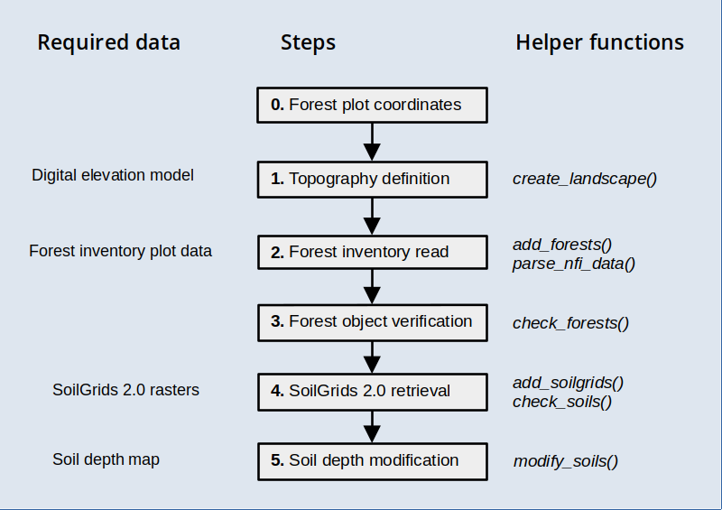

PreparingInputs_I.RmdThis vignette has been created to illustrate the creation of spatial inputs to be used in model simulations with the package, starting from forest inventory plot data. The functions introduced in this document are meant to be executed sequentially to progressively add spatial information, as illustrated in the workflow below, but users are free to use them in the most convenient way.

Before reading this vignette, users should be familiar with forest and soil structures in package medfate. Moreover, a brief introduction to spatial structures used in medfateland package is given in vignette Package overview and examples are given in vignettes Spatially-uncoupled simulations.
Let’s first load necessary libraries:
Package medfate includes a small dataset of tree data, corresponding to a dense holm oak forest in Poblet (Catalonia, Spain). As a result of the abandonment of previous coppicing exploitation, there is a high density of stems per individual. The data set includes data from a control plot and managed plot, where for the second two inventories have been carried out, one before management (thinning operation) and another afterwards. Hence, there are three stand structures.
We begin by defining an sf object with the target
locations and forest stand identifiers (column id):
# Define sf with three stands
cc <- rbind(c(1.0215, 41.3432),
c(1.0219, 41.3443),
c(1.0219, 41.3443))
d <- data.frame(lon = cc[,1], lat = cc[,2],
id = c("POBL_CTL", "POBL_THI_BEF", "POBL_THI_AFT"))
x <- sf::st_as_sf(d, coords = c("lon", "lat"), crs = 4326)
x## Simple feature collection with 3 features and 1 field
## Geometry type: POINT
## Dimension: XY
## Bounding box: xmin: 1.0215 ymin: 41.3432 xmax: 1.0219 ymax: 41.3443
## Geodetic CRS: WGS 84
## id geometry
## 1 POBL_CTL POINT (1.0215 41.3432)
## 2 POBL_THI_BEF POINT (1.0219 41.3443)
## 3 POBL_THI_AFT POINT (1.0219 41.3443)where POBL_CTL is the control forest plot,
POBL_THI_BEF is the managed plot before thinning and
POBL_THI_AFT is the managed plot after thinning.
Once an object sf has been defined with target
locations, we need to determine topographic features (elevation, slope,
aspect) and land cover corresponding to those locations. You should have
access to a Digital Elevation Model (DEM) at a desired resolution. Here
we will use a DEM raster for Catalonia at 30 m resolution, which we load
using package terra:
dataset_path <- "~/OneDrive/EMF_datasets/"
dem <- terra::rast(paste0(dataset_path,"Topography/Products/Catalunya/MET30m_ETRS89_UTM31_ICGC.tif"))
dem## class : SpatRaster
## dimensions : 9282, 9391, 1 (nrow, ncol, nlyr)
## resolution : 30, 30 (x, y)
## extent : 258097.5, 539827.5, 4485488, 4763948 (xmin, xmax, ymin, ymax)
## coord. ref. : ETRS89 / UTM zone 31N (EPSG:25831)
## source : MET30m_ETRS89_UTM31_ICGC.tif
## name : met15v20as0f0118Bmr1r050
## min value : -7.120
## max value : 3133.625Having these inputs, we can use function
add_topography() to add topographic features to our
starting sf:
y_1 <- add_topography(x, dem = dem, progress = FALSE)## |---------|---------|---------|---------|========================================= |---------|---------|---------|---------|=========================================
y_1## Simple feature collection with 3 features and 4 fields
## Geometry type: POINT
## Dimension: XY
## Bounding box: xmin: 1.0215 ymin: 41.3432 xmax: 1.0219 ymax: 41.3443
## Geodetic CRS: WGS 84
## # A tibble: 3 × 5
## id geometry elevation slope aspect
## <chr> <POINT [°]> <dbl> <dbl> <dbl>
## 1 POBL_CTL (1.0215 41.3432) 853. 30.1 76.0
## 2 POBL_THI_BEF (1.0219 41.3443) 814. 29.3 40.3
## 3 POBL_THI_AFT (1.0219 41.3443) 814. 29.3 40.3We can check that there are no missing values in topographic features:
check_topography(y_1)## ✔ No missing values in topography.The next step is to define forest objects for our
simulations. Forests should be defined for all target locations whose
land cover is defined as wildland (here, all three stands).
In our case, we will define forest objects from tree
records in Poblet. While at this point you would read your own data from
a file or data base, here we simply load the data from
medfate:
## Plot.Code Indv.Ref Species Diameter.cm
## 1 POBL_CTL 1 Acer monspessulanum 7.6
## 2 POBL_CTL 2 Arbutus unedo 7.5
## 3 POBL_CTL 3 Arbutus unedo 7.5
## 4 POBL_CTL 4 Arbutus unedo 7.5
## 5 POBL_CTL 5 Arbutus unedo 7.5
## 6 POBL_CTL 6 Arbutus unedo 7.5There are only four columns in the data set. Plot.Code
identifies the forest stand, Indv.Ref is the tree number,
Species is the scientific name of the tree species and
Diameter.cm is the tree diameter in cm. To properly parse
forest inventory data, we need to define a mapping from these variables
into names meaningful for medfate. For this, we can
check function forest_mapTreeTable() in the package.
Furthermore, we need to map the forest stand identifier. If we exclude
Indv.Ref, the other variables would be mapped using:
mapping <- c("id" = "Plot.Code", "Species.name" = "Species", "DBH" = "Diameter.cm")Now we are ready to call function add_forests(), which
should facilitate the creation of forest objects:
y_2 <- add_forests(y_1, tree_table = poblet_trees, tree_mapping = mapping,
SpParams = SpParamsMED)## Warning in forest_mapTreeTable(x = tree_id, mapping_x = tree_mapping, SpParams
## = SpParams): Taxon names that were not matched: Quercus humilis.
## Warning in forest_mapTreeTable(x = tree_id, mapping_x = tree_mapping, SpParams
## = SpParams): Taxon names that were not matched: Quercus humilis.Note that two warnings were raised, informing us that Quercus
humilis (downy oak) was not matched to any species name in
SpParamsMED (that is the reason why we provided it as an
input). We correct the scientific name for downy oak and repeat to avoid
losing tree records:
poblet_trees$Species[poblet_trees$Species=="Quercus humilis"] <- "Quercus pubescens"
y_2 <- add_forests(y_1, tree_table = poblet_trees, tree_mapping = mapping,
SpParams = SpParamsMED)
y_2## Simple feature collection with 3 features and 5 fields
## Geometry type: POINT
## Dimension: XY
## Bounding box: xmin: 1.0215 ymin: 41.3432 xmax: 1.0219 ymax: 41.3443
## Geodetic CRS: WGS 84
## # A tibble: 3 × 6
## id geometry elevation slope aspect forest
## <chr> <POINT [°]> <dbl> <dbl> <dbl> <list>
## 1 POBL_CTL (1.0215 41.3432) 853. 30.1 76.0 <forest [5]>
## 2 POBL_THI_BEF (1.0219 41.3443) 814. 29.3 40.3 <forest [5]>
## 3 POBL_THI_AFT (1.0219 41.3443) 814. 29.3 40.3 <forest [5]>The function has added a column forest with the tree
data. We can check the metrics of the first forest stand using:
summary(y_2$forest[[1]], SpParamsMED)## Tree BA (m2/ha): 3.0179815 adult trees: 3.0179815 saplings: 0
## Density (ind/ha) adult trees: 267 saplings: 0 shrubs (estimated): 0
## Cover (%) adult trees: 42.3272186 saplings: 0 shrubs: 0 herbs: 0
## LAI (m2/m2) total: 0.5419688 adult trees: 0.5419688 saplings: 0 shrubs: 0 herbs: 0
## Fuel loading (kg/m2) total: 0.1414227 adult trees: 0.1414227 saplings: 0 shrubs: 0 herbs: 0
## PAR ground (%): NA SWR ground (%): NABoth density and tree basal area seem unusually low. This is because
we did not specify the sampled area, and tree data in
forest objects require a density estimation. By default,
each record (row in the input data frame) will count as a tree, but we
can add the sampled plot surface to correct density per hectare. In a
15-m radius plot, the sampled surface is 706.86 m2. We add this
information in the data table:
poblet_trees$PlotSurface <- 706.86and we can repeat the read of forest inventory data after adding a new element to the mapping vector:
mapping <- c(mapping, "plot.size" = "PlotSurface")
y_2 <- add_forests(y_1, tree_table = poblet_trees, tree_mapping = mapping, SpParams = SpParamsMED)If we check the forest again, we will see the change in density and basal area:
summary(y_2$forest[[1]], SpParamsMED)## Tree BA (m2/ha): 42.6956049 adult trees: 42.6956049 saplings: 0
## Density (ind/ha) adult trees: 3777.2684832 saplings: 0 shrubs (estimated): 0
## Cover (%) adult trees: 100 saplings: 0 shrubs: 0 herbs: 0
## LAI (m2/m2) total: 4.9189289 adult trees: 4.9189289 saplings: 0 shrubs: 0 herbs: 0
## Fuel loading (kg/m2) total: 1.2992685 adult trees: 1.2992685 saplings: 0 shrubs: 0 herbs: 0
## PAR ground (%): NA SWR ground (%): NAAt this point, we may wonder whether we are finished. Function
check_forests() can help detecting missing data:
check_forests(y_2)## ℹ 3 non-null 'forest' elements out of 3 wildland locations (100%).## ℹ No wildland locations with NULL values in column 'forest'.## ℹ All objects in column 'forest' have the right class.## ! Missing tree height values detected for 3 wildland locations (100%).The function alerts us that height values are missing. Since they are required for simulations using medfate, we need to estimate them. While being overly simplistic, here we use one allometric equation for all species to estimate tree height in cm from diameter:
poblet_trees$Height.cm <- 100 * 1.806*poblet_trees$Diameter.cm^0.518Now we modify the mapping to include height and repeat the reading operation:
mapping <- c(mapping, "Height" = "Height.cm")
y_2 <- add_forests(y_1, tree_table = poblet_trees, tree_mapping = mapping, SpParams = SpParamsMED)If we check the forest data again, we should encounter no more issues:
check_forests(y_2)## ℹ 3 non-null 'forest' elements out of 3 wildland locations (100%).## ℹ No wildland locations with NULL values in column 'forest'.## ℹ All objects in column 'forest' have the right class.## ℹ No missing values detected in key tree/shrub attributes of 'forest' objects.Soil information is most usually lacking for the target locations. Regional maps of soil properties may be available in some cases. Here we assume this information is not available, so that we resort to global products. In particular, we will use information provided in SoilGrids at 250 m resolution (Hengl et al. (2017); Poggio et al. (2021)).
Function add_soilgrids() can perform queries using the
REST API of SoilGrids, but this becomes problematic for multiple sites.
Hence, we recommend downloading SoilGrid rasters for the target region
and storing them in a particular format, so that function
add_soilgrids() can read them (check the details of the
function documentation). The extraction of SoilGrids data for our target
locations is fast using this approach:
soilgrids_path = paste0(dataset_path,"Soils/Sources/Global/SoilGrids/Spain/")
y_3 <- add_soilgrids(y_2, soilgrids_path = soilgrids_path, progress = FALSE)And the result has an extra column soil:
y_3## Simple feature collection with 3 features and 6 fields
## Geometry type: POINT
## Dimension: XY
## Bounding box: xmin: 1.0215 ymin: 41.3432 xmax: 1.0219 ymax: 41.3443
## Geodetic CRS: WGS 84
## # A tibble: 3 × 7
## id geometry elevation slope aspect forest soil
## <chr> <POINT [°]> <dbl> <dbl> <dbl> <list> <list>
## 1 POBL_CTL (1.0215 41.3432) 853. 30.1 76.0 <forest [5]> <df [6 × 7]>
## 2 POBL_THI_BEF (1.0219 41.3443) 814. 29.3 40.3 <forest [5]> <df [6 × 7]>
## 3 POBL_THI_AFT (1.0219 41.3443) 814. 29.3 40.3 <forest [5]> <df [6 × 7]>The elements of the list are the usual data frames of soil properties in medfate:
y_3$soil[[1]]## widths clay sand om bd rfc nitrogen
## 1 50 25.3 32.1 7.24 1.05 16.8 5.07
## 2 100 25.5 32.0 3.10 1.16 18.7 2.18
## 3 150 29.9 31.2 1.96 1.25 19.8 1.35
## 4 300 30.7 30.7 1.00 1.39 19.6 0.81
## 5 400 30.4 30.2 0.89 1.49 20.4 0.58
## 6 1000 32.0 30.2 0.62 1.50 21.5 0.44We can use function check_soils() to detect whether
there are missing values:
check_soils(y_3)## ℹ 3 non-null 'soil' elements out of 3 wildland/agriculture locations (100%).## ℹ No missing values detected in key soil attributes.SoilGrids 2.0 does not provide information on soil depth, and rock
fragment content is normally underestimated, which leads to an
overestimation of water holding capacity. Function
modify_soils() allows modifying soil definitions, if
information is available for soil depth, depth to the (unaltered)
bedrock, or both. Soil depth maps are not common in many regions, so
here we will resort on a global product at 250m-resolution by Shangguan et al. (2017),
which consists on three rasters:
# Censored soil depth (cm)
bdricm <- terra::rast(paste0(dataset_path, "Soils/Sources/Global/SoilDepth_Shangguan2017/BDRICM_M_250m_ll.tif"))
# Probability of bedrock within first 2m [0-100]
bdrlog <- terra::rast(paste0(dataset_path, "Soils/Sources/Global/SoilDepth_Shangguan2017/BDRLOG_M_250m_ll.tif"))
# Absolute depth to bedrock (cm)
bdticm <- terra::rast(paste0(dataset_path, "Soils/Sources/Global/SoilDepth_Shangguan2017/BDTICM_M_250m_ll.tif"))In order to accelerate raster manipulations, we crop the global rasters to the extent of the target area:
x_vect <- terra::vect(sf::st_transform(sf::st_geometry(x), terra::crs(bdricm)))
x_ext <- terra::ext(x_vect)
bdricm <- terra::crop(bdricm, x_ext, snap = "out")
bdrlog <- terra::crop(bdrlog, x_ext, snap = "out")
bdticm <- terra::crop(bdticm, x_ext, snap = "out")Censored soil depth is a poor product of actual soil depth, but we have observed a fairly good correlation between soil depth values in Catalonia and the probability of finding the bedrock within the first two meters. Hence, we multiply the two layers and use it as a (crude) estimate of soil depth, expressing it in mm:
soil_depth_mm <- (bdricm$BDRICM_M_250m_ll*10)*(1 - (bdrlog$BDRLOG_M_250m_ll/100))and we take the depth to bedrock as appropriate, but change its units to mm as well:
depth_to_bedrock_mm <- bdticm*10We can now call function modify_soils() with the two
rasters to perform the correction of soil characteristics:
y_4 <- modify_soils(y_3,
soil_depth_map = soil_depth_mm,
depth_to_bedrock_map = depth_to_bedrock_mm,
progress = FALSE)In this case, the depth to bedrock values were deeper than 2m, so that only the soil depth map had an effect on the correction procedure. After the correction, the rock fragment content of the soil has changed substantially:
y_4$soil[[1]]## widths clay sand om bd rfc nitrogen
## 1 50 25.3 32.1 7.24 1.05 16.80000 5.07
## 2 100 25.5 32.0 3.10 1.16 18.70000 2.18
## 3 150 29.9 31.2 1.96 1.25 19.80000 1.35
## 4 300 30.7 30.7 1.00 1.39 27.76899 0.81
## 5 400 30.4 30.2 0.89 1.49 49.36709 0.58
## 6 1000 32.0 30.2 0.62 1.50 92.56329 0.44Finally, we can call again check_soils() to verify that
everything is fine:
check_soils(y_4)## ℹ 3 non-null 'soil' elements out of 3 wildland/agriculture locations (100%).## ℹ No missing values detected in key soil attributes.We can check whether the input data set is well formed by calling
function initialize_landscape():
z <- initialize_landscape(y_4, SpParamsMED, defaultControl(),
progress = FALSE)
z## Simple feature collection with 3 features and 7 fields
## Geometry type: POINT
## Dimension: XY
## Bounding box: xmin: 1.0215 ymin: 41.3432 xmax: 1.0219 ymax: 41.3443
## Geodetic CRS: WGS 84
## # A tibble: 3 × 8
## id geometry elevation slope aspect forest soil
## * <chr> <POINT [°]> <dbl> <dbl> <dbl> <list> <list>
## 1 POBL_CTL (1.0215 41.3432) 853. 30.1 76.0 <forest [5]> <df [6 × 7]>
## 2 POBL_THI_BEF (1.0219 41.3443) 814. 29.3 40.3 <forest [5]> <df [6 × 7]>
## 3 POBL_THI_AFT (1.0219 41.3443) 814. 29.3 40.3 <forest [5]> <df [6 × 7]>
## # ℹ 1 more variable: state <list>Everything seems fine for simulations!